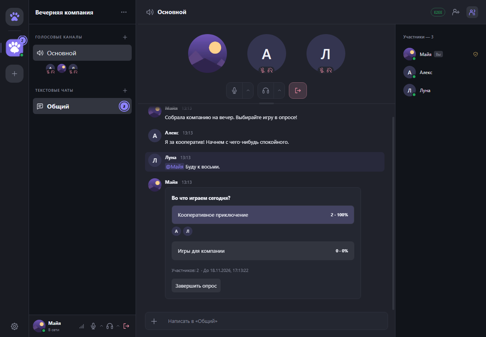
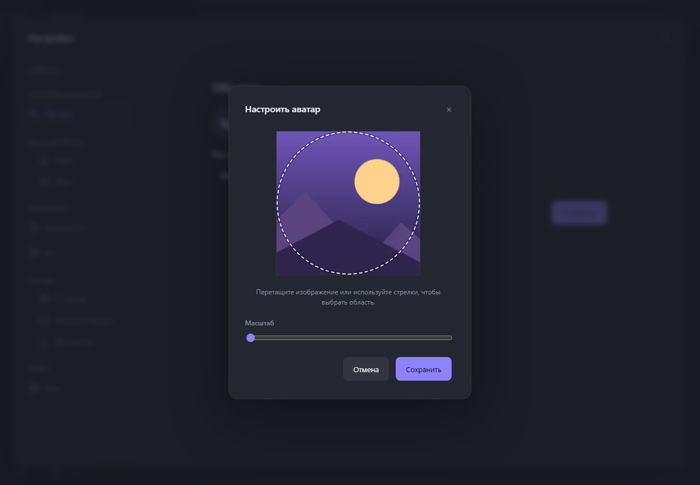

Размещайте у себя
Временный Server из Windows-клиента или постоянный Server под управлением Manager на Windows/Linux. Гостям достаточно установить клиент.
Голос и текстовый чат для совместных игр и небольших сообществ. Создайте комнату на своём ПК или оставьте её работать на Linux VPS. Для входа — приглашение и никнейм. Без аккаунтов.
PawTalk API 2 preview · Client Windows x64 · Manager Windows/Linux
Опубликованные версии: Client · Server · Manager
Установщик без цифровой подписи · Проверяемое автообновление · Описание выпуска, SHA-256 и исходники

Временный Server из Windows-клиента или постоянный Server под управлением Manager на Windows/Linux. Гостям достаточно установить клиент.
Локальное шумоподавление RNNoise, эхоподавление и автоусиление. Выбирайте устройства, чувствительность и громкость.
Активация голосом или push-to-talk, глобальные сочетания, mute/deafen и громкость каждого участника. Приложение работает в трее.
Меняйте высоту голосовой панели и чата. Отправляйте картинки до 2 МиБ, отвечайте на сообщения и копируйте текст. Форматируйте выделение, используйте Markdown, редактируйте и удаляйте свои сообщения на обновлённых серверах. Ссылки открываются в браузере. История автоматически подгружается при прокрутке. Размер порции задаётся в настройках; загруженные сообщения остаются в памяти до выхода из чата или нехватки памяти. На VPS объём хранения задаётся через PAWTALK_CHAT_MAX_MB: 128 МиБ по умолчанию, 0 — без лимита. Ограничения в семь дней нет.
Сообщения приходят сразу. Упомяните участника через @ или перетащите его из списка в чат. Заглушите сервер или отдельный чат на время или до включения вручную; личные упоминания остаются заметными. Уведомления Windows и необязательное мурчание учитывают непрочитанные сообщения и прекращаются после прочтения.
Выберите личный аватар, а администраторы могут установить общую картинку сервера. При кадрировании видны границы квадрата и круглая безопасная область. Новые функции чата требуют Server 0.12.0 или новее.

Создайте опрос на срок от часа до двух недель. Разрешите несколько ответов, выберите анонимное голосование и решите, показывать ли промежуточные результаты. Участники могут менять и отменять голоса; в открытом голосовании видны их аватарки.
Автор может завершить опрос досрочно. По окончании в чат приходит отдельный системный ответ со ссылкой на итог. Завершённый опрос и его результат участники удалить не могут.

Установите клиент на каждый Windows-ПК и выберите Русский или English. В настройках задайте никнейм, выберите устройства и проверьте микрофон. Инструменты разработчика не нужны.
Выберите «Создать сервер», задайте название. Создатель автоматически становится администратором, отдельный пароль API 2 не требуется. Временный сервер работает до остановки хоста.
Передайте полное приглашение лично. Друг вставляет ссылку через «Присоединиться к серверу». Для голоса затем выберите голосовой канал: вступление само по себе не включает микрофон.
Для связи через интернет нужны доступные порты хоста. Автопроброс может не сработать при CGNAT. Альтернатива — постоянный Server под управлением Manager на Windows или Linux с публичным IP. Полная инструкция →
В «Звук и устройства → Голос» выберите микрофон и динамики, попробуйте шумоподавление и прослушайте микрофон. Расширенная обработка и приглушение приложений доступны в раскрывающемся разделе.
Порты хоста по умолчанию: TCP 18443, TCP 18444, UDP 18445. В руководстве сервера описаны проверки firewall и доступности.

Выберите Русский или English в разделе «Настройки → Язык». В настройках с боковой навигацией доступны светлая тема, цветовая палитра и скругления. Подсказки соединения и сообщения используют выбранный язык.
В «Система → Обновления» автопроверку можно отключить или запустить вручную; текущая версия показана рядом. Обновление можно отложить и открыть снова по иконке. Файл проверяется перед установкой, а отдельное окно показывает её ход.
Версии Client, Server и Manager выпускаются независимо. Перед обновлением постоянного сервера проверьте совместимость опубликованных выпусков.

Это ранний выпуск. Реальные микрофоны, чистая установка Windows, игры/PTT, разные внешние сети и полная нагрузка ещё требуют аппаратной приёмки.
Клиент работает только на Windows. Linux — серверная платформа. Видео, демонстрация экрана, веб- и мобильные клиенты пока недоступны.
В опубликованном API 2 сквозное шифрование голоса, сообщений и изображений обязательно. Сервер видит метаданные, но не содержимое. Уход/бан не уничтожает уже полученные ключи, ротации корня и forward secrecy пока нет. API 1 с API 2 несовместим, автоматической миграции нет. Границы защиты.
В «Звук и устройства → Звуки» доступны общая громкость уведомлений, прослушивание мяуканья и мурчания и отключение звуков. Голос и Звуки находятся на общей странице; Система объединяет автозапуск, горячие клавиши и обновления.

Для небольших голосовых комнат на своём сервере — это целевой сценарий. PawTalk сосредоточен на разговорах без регистрации и не заменяет все возможности этих платформ для сообществ.
Голос идёт по WebRTC через медиасервер LiveKit на ПК хоста или вашем VPS. Гостям нужен Windows-клиент, разворачивать свой сервер не требуется.
Убедитесь, что комната работает, а приглашение актуально. В одной сети используйте LAN-приглашение. Через интернет проверьте входящие порты, firewall, проброс на роутере и VPN. При CGNAT может понадобиться доступный извне VPS. См. руководство по сети.
PawTalk проверяет новые выпуски при запуске и проверяет установщик до предложения. Ошибки и вопросы настройки отправляйте через GitHub Issues. Укажите версию и шаги воспроизведения; удалите приглашения, E2EE-ключи и личную сетевую информацию.
Собственный код проекта распространяется по GNU AGPL-3.0-only. Условия использования указаны в лицензии и уведомлениях сторонних компонентов.